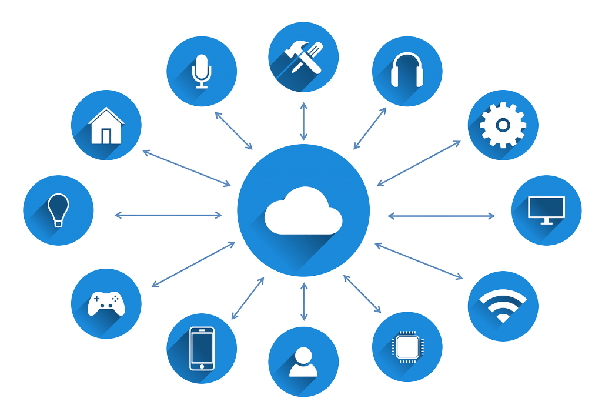
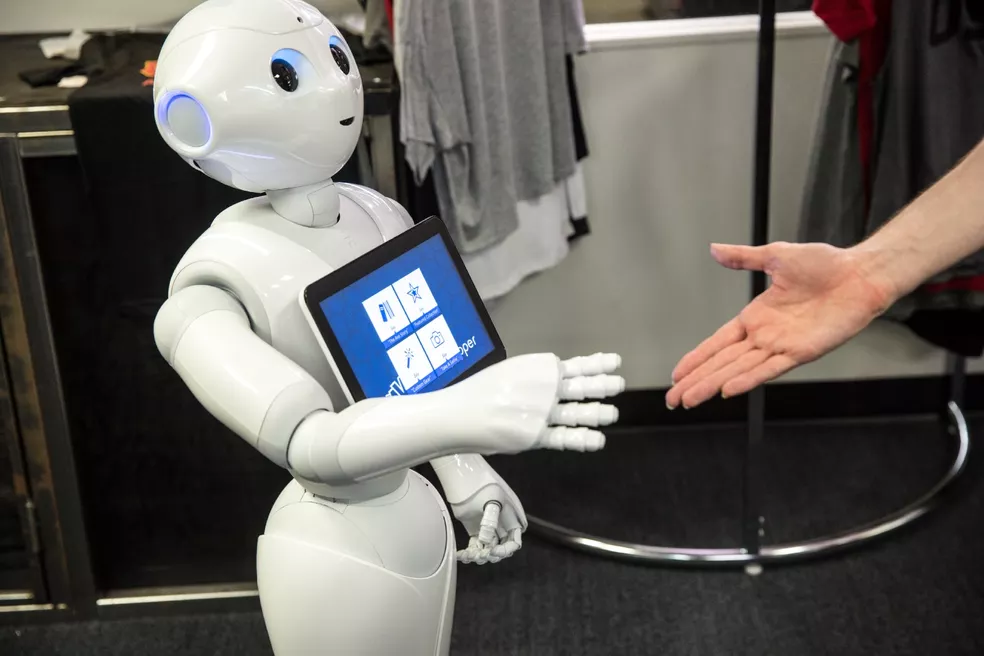
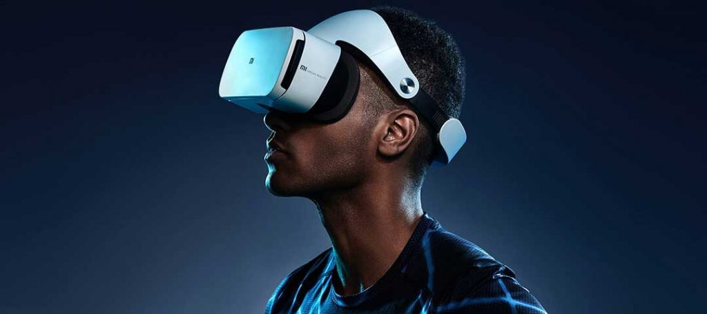

Corresponde a uma revolução tecnológica que tem como objetivo conectar itens usados no dia a dia, como eletrodomésticos, meios de transporte, tênis, roupas e até maçanetas, à rede mundial de computadores. A ideia de conectar objetos é discutida desde 1991, quando a conexão TCP/IP e a Internet que conhecemos hoje começou a se popularizar.
É um avanço tecnológico que permite que sistemas simulem uma inteligência similar à humana — indo além da programação de ordens específicas para tomar decisões de forma autônoma, baseadas em padrões de enormes bancos de dados.
Realidade virtual é uma tecnologia de interface capaz de enganar os sentidos de um usuário por meio de um ambiente virtual criado a partir de um sistema computacional. Ao induzir efeitos visuais, sonoros e até táteis, a realidade virtual permite a imersão completa em um ambiente simulado, com ou sem interação do usuário. Atualmente, a realidade virtual tem como base displays estereoscópicos, como óculos e headsets.
A computação em nuvem é a disponibilidade sob demanda dos recursos de computação como serviços na Internet. Ela elimina a necessidade de as empresas adquirirem, configurarem ou gerenciarem a infraestrutura, assim elas pagarão apenas pelo que usarem.